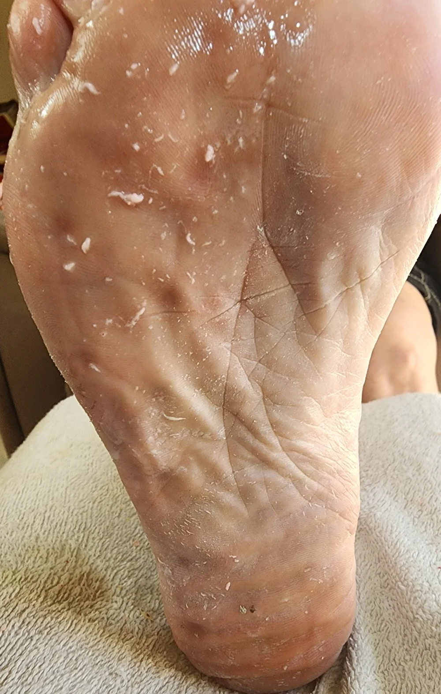

אני בודקת איפה בדיוק העור מתעבה, ומה הצורה שלו. אני גם בודקת את מבנה כף הרגל, כי הוא מסביר הרבה מאוד מהמקרים שבהם העור חוזר תמיד לאותה נקודה. אם צריך, אני מפנה לאורתופד.
אני מתחילה בספריי שמרכך את העור ואת הקוטיקולות. הוא לא על בסיס חומצה, והוא עדין מספיק גם לעור סוכרתי. לפעמים אני חוזרת עליו כמה פעמים במהלך הטיפול.

לעבודה הרגילה אני עובדת עם משייף עדין ומדויק. כשיש הרבה עור קשה או סדקים ממש, אני עוברת לכלי אחר שמיועד לזה, ולפעמים לראש שיוף עגול. יש הרבה דרכים לעשות את זה, ואני בוחרת לפי מה שאני רואה. ⛔ בלי סכין.
מלחים, שמנים אתריים ושמנים צמחיים, עם צמחים שאני טוחנת. אני רוקחת טבעית, וכל המוצרים בקליניקה הם שלי, כך שאני יודעת בדיוק מה נוגע בעור שלך. אחריו שטיפה בקערה עם מים חמים וייבוש טוב.
לא אותו קרם לכולם. לעור סדוק אני עובדת עם קרם קלנדולה, ולמצבים אחרים יש קרם אחר. זה נבחר בסוף הטיפול ולא לפניו.
עיסוי לימפטי של כף הרגל וקצת רפלקסולוגיה, ואז אותו דבר ברגל השנייה. הרבה אנשים נרדמים כאן באמצע, וזאת כנראה העדות הכי טובה לאיך שזה מרגיש.